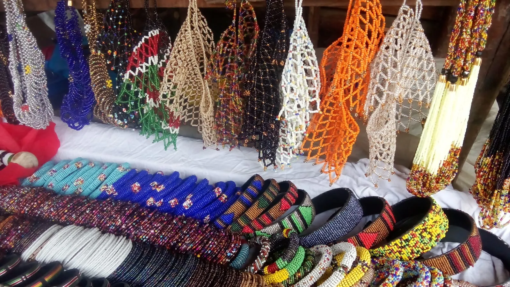
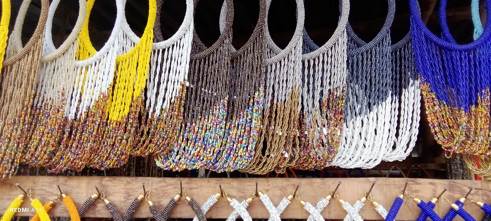

Handmade identity
SharonCraft presents a clear handmade-Kenyan brand position across the site, product pages, and landing pages, which helps customers understand what makes the products different.
SharonCraft is built around handmade beadwork, warm customer help, and a shopping process that explains itself plainly. The goal is not to overwhelm people with hype. It is to make beautiful work easier to discover, verify, and order confidently.
For shoppers, gifts buyers, and home decor clients, that usually means real photos, direct WhatsApp support, visible contact details, and simple next steps before payment.


SharonCraft presents a clear handmade-Kenyan brand position across the site, product pages, and landing pages, which helps customers understand what makes the products different.
WhatsApp support gives buyers a direct way to ask about gifting, delivery, custom colors, and ordering before they commit.
Contact details, privacy terms, returns information, and the ordering approach are all available publicly, which makes the brand easier to check.
Customers can move from the homepage into product pages, landing pages, and buying guides without dead ends or hidden steps.
Shoppers can contact SharonCraft through WhatsApp and the contact page instead of relying on unclear checkout flows.
The website explains gifting help, custom requests, ordering guidance, and delivery conversations in straightforward language.
Returns, privacy, and terms are published so visitors can review how the business handles customer-facing expectations.
Many handmade stores lose trust because the buyer cannot tell who is behind the brand, how to ask questions, or what happens after they click order. SharonCraft works best when those answers are easy to find.
These are the kinds of checks people make when deciding whether a handmade store feels credible enough to order from.
Yes. The website includes public contact details, policy pages, structured product/catalog content, and a consistent brand identity across key pages.
Yes. SharonCraft encourages buyers to use WhatsApp for practical questions around gifts, delivery, product fit, and custom requests.
The site includes gifting pages, occasion-focused landing pages, and support-led messaging that makes choosing easier for non-expert buyers.
Check the About page, read the buying guides, review the contact page, and open the returns and privacy pages before ordering.
These pages give shoppers and search systems a clearer picture of what SharonCraft offers and how the brand helps buyers decide well.

See how SharonCraft frames gift buying in a practical, low-friction way.

A focused decor page that helps home buyers and housewarming gift shoppers compare more confidently.

A buying guide that helps searchers understand jewelry fit, use cases, and styling choices.